Phase 2 refined the identity, drew the symbol families and built sixteen chapters of the guide. This board sets each refinement you approved beside the drawing it replaced, at the size a reader meets it, with the checks the studio ran on every mark.
A few panels wait on teammates who are still at work. Each says whose file it waits for, and fills in when that file lands.
Each panel opens with its answer in a sentence or two. The detail sits below it for when you want to look closer.
Panel 1
Part waiting for the main session
What you approve at Gate 2
Gate 1 named four choices for this gate. You answered three of them during Phase 2, so the plan for Phase 3 is the one still open.
Open at this gate
The plan for Phase 3
Waiting for the main session. This panel fills in when the main session’s summary of the Phase 3 proposal lands.
Answered during Phase 2
The wordmark’s width
On November 7 you kept today’s width. The condensed drawing stays in the files as a record and leaves the proofs.
Reference: I5 · DR-115
Ampersand B as refined
You approved it by name in the same answer. The next panel sets it beside the fifth edition’s ampersand at four sizes.
Reference: I4 · DR-115
The twenty topic symbols
On November 8 Civic Line’s topic drawings became the topic set, and on November 9 you confirmed every Civic Line drawing as final. Testify, Contact an official and Housing joined the set after that.
Gate 1 put three questions on Phase 3’s list. You answered each during Phase 2, so the proposal builds on your answers.
The diverging pair
A chart that splits from a midpoint runs from Prussian through the page color to Verdigris, with a boxed arrow for the direction.
Reference: DR-54
Where chart data comes from
Charts draw on our systems atlas and on primary public sources, each with a full source line. Any other data carries an Illustrative data label beside the chart.
Reference: DR-46
Invented bills
Example bills in trackers stay invented, each labeled Illustrative beside it.
Every drawing here sits at its true size in pixels, as a 1x screen draws it, on the surface you approved it for. Where detail matters, a second view shows the same pixels at twice the size, so you can see where each edge lands.
The fifth edition’s drawings are the earlier boards’ proofs of it, made from its own files in October. Edition 06’s drawings come from the approved files the guide uses today.
Actual sizeTwice the size, pixel for pixel
The wordmark and the ampersand
Wordmark masters for small sizes
Refinement
The fifth edition scaled one drawing down, so its letters blurred at 16 and 24 px. Edition 06 draws a master for each size, with stems and bars on whole pixels and the ampersand at full height.
Where a drawing appears twice, the second view doubles every pixel.
16 px
Fifth edition144 by 16 px
Edition 06152 by 16 px
24 px
Fifth edition216 by 24 px
Edition 06221 by 24 px
Display, 120 px tall
Fifth edition1079 by 120 pxEdition 061088 by 120 px
Reference: I3 · G1-02 · D2-04 to D2-10
Ampersand B, a drawing of our own
Refinement
The fifth edition set its ampersand from Lora Bold, a free font anyone can type. Ampersand B is one pen path that crosses itself, with a beak serif and a tail whose foot rests on the baseline, and it has its own masters at 16 and 24 px.
Where a drawing appears twice, the second view doubles every pixel.
16 px
Fifth edition15 by 16 px
Edition 0614 by 16 px
24 px
Fifth edition22 by 24 px
Edition 0621 by 24 px
48 px
Fifth edition43 by 48 px
Edition 0644 by 48 px
Display, 280 px tall
Fifth edition250 by 280 pxEdition 06255 by 280 pxBoth, drawn over each other255 by 280 px
Reference: I4 · G1-01 · DR-115 · D2-03 to D2-13
Equal white on both sides of the ampersand
Defect fix
Spaced by the nearest ink, the fifth edition left 1.24 times as much white to the right of the ampersand as to its left. Edition 06 moves the ampersand 1.42 font units toward ACTION, so both gaps hold the same white, and the wordmark keeps its width.
Where a drawing appears twice, the second view doubles every pixel.
24 px
Fifth edition216 by 24 px
Edition 06218 by 24 px
Display, 120 px tall
Fifth edition1079 by 120 pxEdition 061088 by 120 pxBoth, drawn over each other1088 by 120 px
Reference: I2 · G1-02 · D1-13
Six symbols that cut off their own edges
Defect fix
Six of the fifth edition’s symbols lost ink at the edges of their boxes: the ampersand, the stacked lockup, the one-line tagline, both lines of the two-line tagline and the web address. Edition 06 exports each in a box that holds all its ink, with the outlines unchanged.
The ampersand, display size
Fifth edition179 by 200 pxEdition 06179 by 200 px
The stacked lockup, display size
A new stacked lockup has replaced this one since November 7.
Fifth edition462 by 160 pxEdition 06463 by 160 px
The other four symbols
The one-line tagline, display size
Fifth edition898 by 40 pxEdition 06727 by 40 px
The two-line tagline, first line
Fifth edition570 by 40 pxEdition 06464 by 40 px
The two-line tagline, second line
Fifth edition313 by 40 pxEdition 06255 by 40 px
The web address, display size
Fifth edition447 by 40 pxEdition 06360 by 40 px
Reference: I1 · G1-02 · DR-113
The lockmark and the lockups
Lockmark masters for small sizes
Refinement
At 24 px the fifth edition’s lockmark drew only 5 percent of its ink solid, so its nodes went soft. Edition 06 draws masters at 16, 24 and 48 px with each node on whole pixels and a larger lever. The 24 and 48 px files were rebuilt on November 10, so each node and the lever is one outline.
Where a drawing appears twice, the second view doubles every pixel.
16 px
Fifth edition16 by 16 px
Edition 0616 by 16 px
24 px
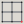
Fifth edition24 by 24 px
Edition 0624 by 24 px
48 px
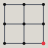
Fifth edition48 by 48 px
Edition 0648 by 48 px
Display, 200 px
The display master is the fifth edition’s drawing, byte for byte, under a new file name.
The fifth edition’s minimum sizes disagreed with each other. Edition 06 sets one rule: no mark draws its capitals under 14 px on screen, no tagline inside a lockup sets under 13 px, and each lockup names the mark that takes its place below its minimum.
Where a drawing appears twice, the second view doubles every pixel.
The wordmark
Fifth edition, at its minimum120 by 14 px
Edition 06, at its minimum152 by 16 px
The horizontal lockup
Fifth edition, at its minimum192 by 37 px
Edition 06, at its minimum196 by 37 px
The monogram
Fifth edition, at its minimum48 by 18 px
Edition 06, at its minimum48 by 18 px
Reference: I8 · G1-02 · D2-27 · DR-217
The horizontal lockup for print
Refinement
Since November 8 the masthead has set the lockmark at 2.18 times the height of the capitals, while print kept the October drawing at 2.4. The print master now takes the masthead’s proportion, so the lockup prints as it shows on screen. Both are drawn here with 40 px capitals.
Capitals 40 px
October master, in print until November 11512 by 96 pxPrint master, in use503 by 88 px
Reference: DR-210 · DR-131 · DR-217 · D2-482
The sign-off on social cards
Refinement
A social card now signs off with the 48 px lockmark master drawn at exactly twice its size, 96 px, so the mark holds up in a feed. Covers, posters and the masthead keep 48 px. Each card here is 1200 by 630 px, its true size.
On Newsprint
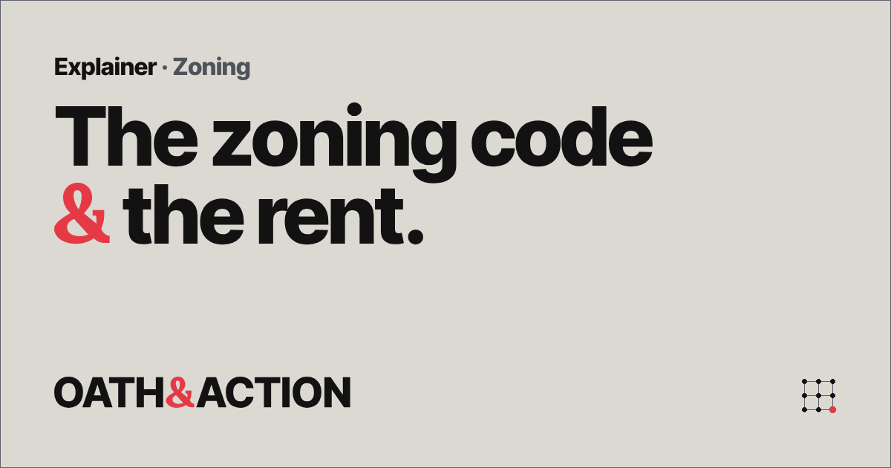
48 px sign-off1200 by 630 px
96 px sign-off, in use1200 by 630 px
The card on Charcoal
On Charcoal
No 48 px card was drawn on Charcoal.
48 px sign-off
96 px sign-off, in use1200 by 630 px
Reference: DR-211 · D2-715
The hinge diagram and the badge
The hinge diagram, drawn again
Refinement
The fifth edition drew the hinge’s arc as a dotted line, the line our systems atlas uses for a hypothesis. The new diagram sets the ampersand in a ring between OATH and ACTION, with two solid hairline arcs that run clockwise.
Where a drawing appears twice, the second view doubles every pixel.
48 px tall
Fifth edition163 by 48 px
Edition 06199 by 48 px
Display, 200 px tall
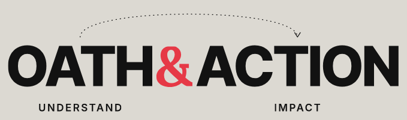
Fifth edition679 by 200 px
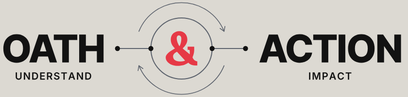
Edition 06840 by 200 px
Reference: I6 · G1-01 · D1-21
The hinge-circle badge
New mark
A new mark with no words: ampersand B inside the hinge diagram’s ring. It signs an end mark, a report’s back cover and events, and never serves as an avatar or a favicon. The fifth edition had no badge, so the left column shows the Phase 1 drawing it grew from.
Where a drawing appears twice, the second view doubles every pixel.
16 px
Phase 1 drawing16 by 16 px
Edition 0616 by 16 px
24 px
Phase 1 drawing24 by 24 px
Edition 0624 by 24 px
Display, 200 px
Phase 1 drawing200 by 200 pxEdition 06200 by 200 px
Reference: S9 · G1-02 · D2-25
Red’s job, and marks on Prussian
One job for red, and White on Prussian
Refinement
Rule 05.3 gives red one working job in each view and keeps it off Prussian. As flat colors, Pillar Red on Prussian measures 3.19 to 1, and the Gate 1 report measured the fifth edition’s red ampersand at 2.27 to 1 at 16 px, where its thin strokes blend into the ground. Identity marks on Prussian now take White, at 13.28 to 1.
Where a drawing appears twice, the second view doubles every pixel.
16 px
Fifth edition144 by 16 px
Edition 06152 by 16 px
96 px tall
Fifth edition863 by 96 pxEdition 06870 by 96 px
Reference: I9 · I10 · G1-01 · D2-01 · D1-26
The pillar marks
The four pillar marks
Replaced
Gate 1 approved Direction A, a geometric solid, for Explain, Track, Connect and Act. On October 29 you replaced it with Civic Line’s four drawings, which the guide uses today, with pixel fits at 16 and 24 px for 1x screens.
Where a drawing appears twice, the second view doubles every pixel.
48 px
Explain
Track
Connect
Act
Fifth edition48 by 48 px each
Drawn only at 16 and 24 px before it was replaced.
Gate 1, Direction A
Explain
Track
Connect
Act
In use48 by 48 px each
24 px
Explain
Track
Connect
Act
Fifth edition24 by 24 px each
Explain
Track
Connect
Act
Gate 1, Direction A24 by 24 px each
Explain
Track
Connect
Act
In use24 by 24 px each
16 px
Explain
Track
Connect
Act
Fifth edition16 by 16 px each
Explain
Track
Connect
Act
Gate 1, Direction A16 by 16 px each
Explain
Track
Connect
Act
In use16 by 16 px each
Reference: Y1 · G1-01 · DR-04 · DR-179 · DR-138
Symbols and icons
Civic Line in place of the fifth edition’s topic symbols
Replaced
The fifth edition drew twenty topic symbols as filled shapes. Civic Line, the line drawings you made and approved as final, now draws topics and the atlas in one hand: 125 drawings, used at 48 px and up, and at 24 px for the 41 that read there. Five subjects share a name in both sets, and they stand side by side here.
Where a drawing appears twice, the second view doubles every pixel.
Local government
Fifth edition48 by 48 px
Civic Line48 by 48 px
Public records
Fifth edition48 by 48 px
Civic Line48 by 48 px
Health care
Fifth edition48 by 48 px
Civic Line48 by 48 px
Contact an official
Fifth edition48 by 48 px
Civic Line48 by 48 px
Testify
Fifth edition48 by 48 px
Civic Line48 by 48 px
All twenty of the fifth edition’s topic symbols, at 48 px
Housing is a new Civic Line drawing: an apartment block beside a pitched-roof house on one ground line, with red on one window of the block. It serves at 48 px and up and stays off the 24 px list for now.
Where a drawing appears twice, the second view doubles every pixel.
48 px
Fifth edition48 by 48 px
Edition 0648 by 48 px
128 px, the master’s own size
The fifth edition drew Housing at 48 px and smaller.
Fifth editionEdition 06128 by 128 px
Reference: DR-207 · D2-1238 · D2-1262
Pixel fits for drawings at 24 px
Refinement
At 24 px a drawing made on a 128-unit grid lands between pixels and blurs. Each of the 37 Civic Line drawings on the 24 px list now has a fit drawn on the 24 px grid, which 1x screens draw, while 2x screens draw the master. Six are shown here, and the craft panel holds all 41, the four pillar fits among them.
Where a drawing appears twice, the second view doubles every pixel.
Voting, CL-001
The master, drawn at 24 px24 by 24 px
The fit, in use on 1x screens24 by 24 px
Local Government, CL-031
The master, drawn at 24 px24 by 24 px
The fit, in use on 1x screens24 by 24 px
Public Records, CL-048
The master, drawn at 24 px24 by 24 px
The fit, in use on 1x screens24 by 24 px
Healthcare, CL-067
The master, drawn at 24 px24 by 24 px
The fit, in use on 1x screens24 by 24 px
Automatic Registration, Reform R-05
The master, drawn at 24 px24 by 24 px
The fit, in use on 1x screens24 by 24 px
Paper Ballots & Audits, Reform R-45
The master, drawn at 24 px24 by 24 px
The fit, in use on 1x screens24 by 24 px
Reference: DR-209 · DR-205 · DR-136 · D2-1265
Pause and Filter at 16 px
Refinement
Two utility icons were redrawn at 16 px: Pause with 5 px bars, and Filter with a 5 px spout whose outer edges sit on whole pixels. Every other 16 px file and every 24 px file stays as you approved it on November 10.
Where a drawing appears twice, the second view doubles every pixel.
Pause, on Newsprint
As first approved16 by 16 px
In use16 by 16 px
Pause, on Charcoal
As first approved16 by 16 px
In use16 by 16 px
Filter, on Newsprint
As first approved16 by 16 px
In use16 by 16 px
Filter, on Charcoal
As first approved16 by 16 px
In use16 by 16 px
Reference: DR-208 · DR-197 · DR-161
Patterns
Rule 12.4 retires the hinge arcs
Retired
The guide allowed one pattern, arcs drawn from the hinge, in the open corner of a cover. On November 11 you retired it: an open area now stays plain, or carries the large crop of ampersand B or a watermark. Both covers are invented, and each is labeled Illustrative.
Every icon drawn for 16 and 24 px passes the pixel-fit check on today’s files, and every symbol in the guide’s sprite draws the same pixels as its own file.
The sheets, at 16, 24 and 48 px
16 px: the utility icons and the pillar fits
Each icon at actual size on its left, and the same pixels at twice the size on its right.
Close
Menu
Arrow
Chevron
Download
Another Site
Search
Filter
Copy
Play
Pause
Reset
Error
Success
Selected Check
View Full Size
Sort
Warning
Explain
Track
Connect
Act
24 px: the 41 drawings that read at this size
Each fit at actual size, as a 1x screen draws it, and the same pixels at twice the size.
Explain
Track
Connect
Act
Voting, CL-001
Petition, CL-004
Civic Ties, CL-006
Decisive Primaries, CL-010
Incumbent Defeat, CL-013
Evidence, CL-023
Feedback Loop, CL-024
Watchdogs, CL-028
Local Government, CL-031
Local Reporting, CL-032
Feed Ranking, CL-039
Platform Power, CL-040
Data Rights, CL-047
Public Records, CL-048
Worker Bargaining, CL-050
Market Power, CL-051
Home Equity, CL-054
Labor Share, CL-057
Taxes & Benefits, CL-060
Household Income, CL-061
Healthcare, CL-067
Education, CL-068
Environment, CL-070
Policy, CL-071
Reform, CL-072
Automatic Registration, Reform R-05
On-Cycle Elections, Reform R-06
Donor Disclosure, Reform R-08
Stock-Trading Ban, Reform R-09
Automatic Funding, Reform R-14
Watchdog Remedies, Reform R-15
Civil Service, Reform R-17
Drug-Pricing Rules, Reform R-19
Indexed Minimum Wage, Reform R-23
Tax Enforcement, Reform R-27
Feed Choice, Reform R-37
Paper Ballots & Audits, Reform R-45
48 px: all 125 Civic Line drawings in use
48 px is the floor for topic and atlas drawings. Each sits at actual size.
Open the sheet of 125
Voting, CL-001
Representation, CL-002
Registration, CL-003
Petition, CL-004
Public Meeting, CL-005
Civic Ties, CL-006
Turnout Equality, CL-007
Political Hostility, CL-008
Safe Seats, CL-009
Decisive Primaries, CL-010
Electoral Pressure, CL-011
Election Rules, CL-012
Incumbent Defeat, CL-013
Entrenched Power, CL-014
Political Money, CL-015
Lobbying, CL-016
Policy Favoritism, CL-017
Earned Trust, CL-018
Explain, CL-019
Track, CL-020
Connect, CL-021
Act, CL-022
Evidence, CL-023
Feedback Loop, CL-024
Testify, CL-073
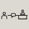
Contact an Official, CL-074
Congress, CL-025
Executive Power, CL-026
Court Alignment, CL-027
Watchdogs, CL-028
Public Services, CL-029
Reform Tests, CL-030
Local Government, CL-031
Local Reporting, CL-032
Hostile Content, CL-033
New Technology, CL-034
Residential Sorting, CL-035
Cross-Border Capital, CL-036
Foreign Interference, CL-037
External Shocks, CL-038
Feed Ranking, CL-039
Platform Power, CL-040
Workplace AI, CL-041
AI Concentration, CL-042
Digital Government, CL-043
Grid Demand, CL-044
Pricing Algorithms, CL-045
AI Infrastructure, CL-046
Data Rights, CL-047
Public Records, CL-048
Wealth Concentration, CL-049
Worker Bargaining, CL-050
Market Power, CL-051
Household Security, CL-052
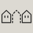
Housing Scarcity, CL-053
Home Equity, CL-054
Productivity, CL-055
Public Investment, CL-056
Labor Share, CL-057
Stock Ownership, CL-058
Credit Allocation, CL-059
Taxes & Benefits, CL-060
Household Income, CL-061
Assets & Debt, CL-062
Essential Costs, CL-063
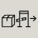
Trade Costs, CL-064
Climate & Insurance, CL-065
Energy & Emissions, CL-066
Healthcare, CL-067
Education, CL-068
Childcare, CL-069
Environment, CL-070
Policy, CL-071
Reform, CL-072
Housing, CL-075
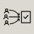
All-Party Primaries, Reform R-01
Ranked-Choice Voting, Reform R-02
Proportional Elections, Reform R-03
Citizen Map Commissions, Reform R-04
Automatic Registration, Reform R-05
On-Cycle Elections, Reform R-06
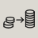
Small-Donor Matching, Reform R-07
Donor Disclosure, Reform R-08
Stock-Trading Ban, Reform R-09
Revolving-Door Limits, Reform R-10
Election Enforcement, Reform R-11
Filibuster Reform, Reform R-12
Congressional Capacity, Reform R-13
Automatic Funding, Reform R-14
Watchdog Remedies, Reform R-15
Court Terms & Ethics, Reform R-16
Civil Service, Reform R-17
Emergency-Power Limits, Reform R-18
Drug-Pricing Rules, Reform R-19
Merger Enforcement, Reform R-20
Labor-Law Remedies, Reform R-21
Wage Boards, Reform R-22
Indexed Minimum Wage, Reform R-23
Paid Leave, Reform R-24
Child Tax Credit, Reform R-25
Automatic Recession Aid, Reform R-26
Tax Enforcement, Reform R-27
Capital-Income Tax, Reform R-28
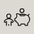
Baby Bonds, Reform R-29
By-Right Housing, Reform R-30
Childcare Supply, Reform R-31
Local-News Funding, Reform R-32
Citizen Assemblies, Reform R-33
Participatory Budgeting, Reform R-34
Term Limits · Rejected, Reform R-35
Public Investment, Reform R-36
Feed Choice, Reform R-37
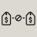
Pricing-Data Limits, Reform R-38
Digital Service Teams, Reform R-39
Worker Voice on AI, Reform R-40
Grid Cost Allocation, Reform R-41
Congressional Tariff Votes, Reform R-42
Disaster Mitigation, Reform R-43
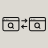
Digital Competition, Reform R-44
Paper Ballots & Audits, Reform R-45
Expand the House, Reform R-46
Fusion Voting, Reform R-47
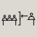
Agency Independence, Reform R-48
Cross-Party Civic Work, Reform R-49
Popular-Vote Options, Reform R-50
The pixel-fit check, run on today’s files
A drawing passes at a size when it passes on a 1x and a 2x screen: its thinnest stroke covers at least one device pixel, every straight stroke lands within a tenth of a pixel of the grid, separate parts keep at least a pixel apart, and no counter fills in.
Drawings
Size
Files
Pass
Thinnest stroke at 1x
Civic Line pixel fits
24 px
37
37 of 37
1.02 px
Pillar fits
24 px
4
4 of 4
1.02 px
Pillar fits
16 px
4
4 of 4
0.99 px
Utility icons
24 px
18
18 of 18
1.93 px
Utility icons
16 px
18
18 of 18
1.45 px
Housing
48 px
1
0 of 1 Straight strokes
1.25 px
Housing, like every Civic Line master, is drawn on a 128-unit grid, so at 48 px its straight strokes fall between pixels. The check marks that as a miss on straight strokes, as it did on November 10, and its strokes, gaps and counters pass. The 48 px floor allows for it.
The sprite check
The guide draws its icons from one sprite. The check draws each symbol through the sprite beside its own file and compares every pixel. It passes.
Family
Pairs at 1x
Pairs at 2x
Largest difference
Civic Line, black
250
250
0 of 255
Civic Line, red and black
250
250
0 of 255
Pillar fits, black
8
8
0 of 255
Pillar fits, red and black
8
8
0 of 255
The 37 pixel fits
37
37
0 of 255
Utility icons
36
36
0 of 255
41 of 41 drawings on the 24 px list draw their fit on 1x and 1.5x screens and their master on 2x screens, as the switch you approved asks. Run November 11, 2026.
Civic Line quality checks
The October trace and its November successor, the set in use.
The October trace
All 122 drawings traced and reviewed, with none left to do and no errors. The four color editions of each drawing share one set of shapes, checked element by element in 6,723 places.
Files
488 SVG files and 1,464 tile files, with no repeated and no broken internal IDs across 1,985 files.
Tiles
Every drawing clears the edge of its square, rounded and circle tile; the tightest margins are 21.5, 22.7 and 21.9 units of 128.
The set in use
125 drawings: 116 October masters unchanged and 9 redrawn or new drawings you approved by name, in the October order.
Civic Line inks on their grounds, with 3 to 1 the guideline for graphics
Ink
Ground
Ratio
3 to 1
Charcoal lines
Newsprint tile
13.29 to 1
Meets
Pillar Red accent
Newsprint tile
2.96 to 1
Falls short
Newsprint lines
Charcoal tile
13.29 to 1
Meets
Pillar Red accent
Charcoal tile
4.49 to 1
Meets
Charcoal lines
White ground
18.73 to 1
Meets
Pillar Red accent
White ground
4.17 to 1
Meets
Newsprint lines
Prussian ground
9.42 to 1
Meets
Charcoal tile
White page
18.73 to 1
Meets
Newsprint tile
White page
1.41 to 1
Falls short
Newsprint tile
Charcoal page
13.29 to 1
Meets
Charcoal tile
Newsprint page
13.29 to 1
Meets
Pillar Red on Newsprint falls short of 3 to 1. Every red part is a drawn shape that the one-color editions carry in Charcoal or Newsprint, so red never carries a meaning alone.
Ampersand B still reads as an ampersand and matches no font installed here closely enough to pass for it. Among the icons, the closest pairs the script finds are listed with their scores, so you can judge them by eye.
Ampersand B against every serif ampersand installed here
Two tests, set before the run. B must overlap Lora Bold, the fifth edition’s source, by 0.70 or more, so a reader still knows it. It must overlap every other face by less than the median overlap of one family’s Regular and Bold, 0.698, so no installed font could pass for it.
Still reads as an ampersand
Overlap with Lora Bold 0.734, over 0.70. Passes.
Passes for no installed font
Nearest other face, Liberation Mono Bold, at 0.686, under 0.698. Passes. 33 faces in 9 families checked.
Ampersand BThe drawing
Lora Bold, the fifth edition’s source0.734
Liberation Mono Bold0.686
Courier 10 Pitch Bold0.685
FreeMono Bold0.635
Bitstream Charter Bold0.618
FreeSerif Bold0.595
Liberation Serif Bold0.543
The faces closest to B, each scaled to the same ink height, with its overlap. Overlap runs from 0, no shared ink, to 1, the same shape. Commercial faces are not installed here, so the check could not include them.
Icon look-alikes
The script blurs each drawing’s ink at 24 px, compares shapes and ranks every score against the 7,626 pairs among the Civic Line masters. A score in the top 1 percent is flagged, and one in the top 5 percent is watched. Top 1 percent starts at 0.909, and top 5 percent at 0.868.
Drawings checked
Against
Flagged
Watched
Closest score
The 37 pixel fits
The Civic Line masters, 7,626 pairs
2
16
0.917
The 18 utility icons, both sizes
The Civic Line masters, 7,381 pairs
0
2
0.897
Housing and its two other options
The Civic Line masters, 7,626 pairs
0
0
0.690
The flagged pairs, side by side at 24 px
You approved all 37 fits with these pairs in view. Each pair stands here so you can judge it again.
On-Cycle Elections, Reform R-06the fit
Grid Cost Allocation, Reform R-41the master
0.917top 0.7 percent
On-Cycle Elections, Reform R-06the fit
Digital Competition, Reform R-44the master
0.915top 0.8 percent
Scores from the run of November 10, 2026. Each fit stands as the guide draws it today.
Reference: D1-16 · D2-13 · DR-115 · DR-209
Panel 5
Waiting for the accessibility lead
Contrast for every token on every surface
Waiting for the accessibility lead. This panel fills in when the accessibility lead’s contrast table lands.
Reference: Task 5 of the Gate 2 brief · Rule 05.3
Panel 6
Waiting for the engineer
The token files agree with each other
Waiting for the engineer. This panel fills in when the engineer’s parity output lands.
Reference: DR-214 · DR-218
Panel 7
Ready
The guide at 1440 and 390 px, by keyboard and with motion reduced
Each chapter’s opening screen
The opening screen of every chapter and of the identity proofs, at 390 px wide on a phone, in one row at true size. Each opens at 1440 px below it.
Forced Colors Ch17 Rule 17 8 Ten States Dark Scheme 1440
Forced Colors Ch18 Rule 18 1 Button Focus 1440
Forced Colors Ch18 Rule 18 1 Buttons Live 1440
Forced Colors Ch18 Rule 18 17 Form Error Focus 1440
The keyboard walk on the preview’s front pages
Open 0 pictures at true size
Reference: Task 5 of the Gate 2 brief · DR-213
Panel 8
Ready
The creative director’s scores and the drift review
The creative director’s scores
Scores run from 1 to 5, and an item is ready at 4 or more on every criterion. A box marks a score under 4.
Item
Craft
Clarity
Brand fidelity
Usefulness
Evidence honesty
Accessibility
Ready
Chapter 01, Purpose
4
4
4
4
5
4
Yes
Chapter 02, Voice
4
4
4
4
4
4
Yes
Chapter 03, Identity
4
4
4
5
4
4
Yes
Chapter 04, The Ampersand and the hinge
4
4
4
4
4
4
Yes
Chapter 05, Color
4
4
4
4
4
4
Yes
Chapter 06, Type
4
4
4
4
4
4
Yes
Chapter 07, Layout and spacing
4
4
4
4
4
4
Yes
Chapter 08, The lockmark
4
4
4
4
4
4
Yes
Chapter 09, Pillar icons
4
4
5
4
4
4
Yes
Chapter 10, Topic and atlas symbols
4
4
4
5
4
4
Yes
Chapter 11, Status and utility icons
4
4
4
5
4
4
Yes
Chapter 12, Graphic devices and patterns
4
4
4
4
4
4
Yes
Chapter 17, Motion and states
4
4
4
4
4
4
Yes
Chapter 18, Components and interaction
4
4
4
5
4
4
Yes
Chapter 19, Accessibility
4
4
4
4
5
4
Yes
Chapter 26, Tokens and how to choose them
4
4
4
3
4
4
Not yet
Identity proofs
4
4
5
4
4
4
Yes
The drift review
4 of 5
4 of 5. The chapters read as one system: every rule reference resolves and says what it claims, every number agrees with the token, icon and WCAG data, every Atlas V7 ID is real, and the locked lines are exact; the drift that remains sits where stage C's later rules have not reached back into the guide's own shell, into stage A and B file lists, and into a dozen words and code comments.
Reference: DR-221 · DR-226
Panel 9
Part waiting for the engineer, the creative director and the board builder
What the studio tested, and what it could not
Each list below comes from one teammate’s notes. The four device checks stay untested by your decision, and the guide carries a script for each.
Not tested by design
Chapter 19 gives a script for each check this workspace cannot run. Each waits for a person with the device.
An iPhone with VoiceOver
An Android phone with TalkBack
Windows with NVDA and a contrast theme
A Mac with VoiceOver
The accessibility lead
Not tested
DR-213's four device scripts, untested by design: iPhone with VoiceOver, Android with TalkBack, Windows with NVDA and a contrast theme, and Mac with VoiceOver.
Any screen reader's speech. Names and roles come from Chromium's accessibility tree, which is what a screen reader reads, but no screen reader ran.
Windows High Contrast and other real forced-colors themes. Chromium's emulation stands in for them.
A rendered contrast scan of every element on the page. The engineer's guide_check.js runs that on the preview; this report covers the tokens and the walked stops.
Text at 200 percent zoom and reflow at 320 px, 1024 and 360 px widths, axe-core, grayscale and print. None were in this task; the engineer's guide check covers the widths and axe.
The other six forms, players and stages in chapters 17 and 18 by keyboard, beyond the hinge player and the light form; their keyboard paths are in the engineer's keyPath walks.
The dark-theme copy of chapter 18's form by keyboard.
Touch, voice control, switch access and a real phone.
Contrast as a physical screen or print shows it; ratios come from sRGB values.
What the accessibility lead tested, 12 items
Contrast of every color token on every surface and ground the token files name, light and dark, by script from tokens.json and tokens.css: 341 pairs, 0 failures.
tokens.css theme and surface-class blocks against tokens.json: 509 short names, 0 differences; rendered root and dark-theme values on the frozen page, 388 properties, 0 differences.
The 269 ratios stored in tokens.json, the 342 ratios chapter 26 publishes, and the Master Brief's 21 palette ratios, recomputed.
Marks inside a surface's own grounds: 232 placements, 17 flagged.
Opening screens of the 16 chapters and the identity proofs at 1440 and 390 px; "Where to start" at both widths.
Keyboard walk on the frozen page at 1440 and 390 px: skip links, contents, Rule 05.3 with its cross-reference and return, chapter 18's live form in error and success, chapter 17's hinge player with Slow motion, Play, Pause and Reset, chapter 26's search and Copy, and the phone menu with Escape at 390.
Keyboard walk on the preview at 1440 and 390 px: cover, "Where to start" end to end, one step out and back, the contents link, and the phone menu link at 390.
Accessible name, role, description and state of each of 195 stops from Chromium's accessibility tree; focus visibility by hit test; ring contrast against its ground; target size against 2.5.8.
The error bar's keyline, rendered at 3x in Rule 17.8, chapter 18's messages and the Rule 18.17 form.
Reduced motion on chapter 17's seven players and chapter 18's theme switch, with byte comparison of the final frame at 0 and 1.5 seconds; three frames of each in normal motion.
Forced colors (Chromium emulation) on Rules 05.4, 11.2, 11.15, 17.8, 18.1 and 18.17's error state with focus.
The preview's outside requests at 1440 and 390: none.
The drift review team
Not tested
I did not render the page. Hover, focus and current-place findings come from the page's CSS, and the forced-colors effect of inset shadows is inferred from how browsers treat box-shadow there, not observed.
I did not read all 8,518 prose blocks by eye. Voice was read by script, by chapter statistics and through the 351 citing sentences and 29 full rules.
Words drawn inside raster images (photographs and PNG plates) were not checked.
Print sizes (inches, millimeters, points) were compared only where they sit beside screen sizes, not converted against the masters.
Bare IDs inside source lines (A4, A5, A6, X5, R-01 to R-12 in chapter 18's source) were checked for existence only. Of chapter 10's 125 meanings, only the reform names were checked against the atlas.
Where a sentence names one color with its ratio (272 cases), the ratio matches a palette pair, but I did not confirm which surface each sentence meant.
The guide check's own results (redTouchesPrussian, fitSwitch, keyPath) were not rerun; I relied on my word and token scans for red on Prussian.
The Gate 2 preview and its new pages (Where to start, the font license, the edition line) were not built while I worked and were not read.
What the drift review team tested, 13 items
Text extraction (extract.py): 19,382 text blocks, 1,979 links and 2,040 accessible names, alts and frame names, each with its chapter, rule and specimen.
Rule references (xref.py): 1,929 mentions of "Rule NN.N" or "Rules NN.N to NN.N", in words, captions, accessible names and link texts, reach all 185 rules; none names a rule that does not exist, and all use one form. All 1,135 rule links land on the rule their words name. No same-page link is dead.
Claims against targets: the 351 distinct sentences that cite a rule in another chapter, each read beside its target's title (xsent.json); 24 target rules printed in full (showrule.py) and more than 40 claims checked against their words (01.21 to 10.4, 09.2 to 05.3, 12.4 to 04.2, 08.3 and 11.1, 18.1 to 17.9 and 05.3, 18.20 to 11.2, 11.4 and 11.10, 18.22 to 11.14 and 17.3, 08.2 to 03.2 and 03.6, 12.6 to 10.10, 05.4 to 17.8 and 17.10, 04.6 and 09.3 both ways, 03.4 to 04.1 and 04.6, 12.2 to 05.6, 12.3 to 03.4 and 03.5, 11.16 to 05.3, 26.5 to 09.3 and 10.4, 26.6 to 18.4, 17.6 to 03.1 and 08.1, 11.11 to 17.10, 18.17 and 18.18 to 11.15 and 11.16, 19.6 to 07.6, and the token table to 05.3, 05.5, 17.7 and 18.5). One misattribution found.
Chapter references: every mention of a chapter not on the page (13 to 16, 20 to 25, 27, 28) is plain text or marked for later; none is a link.
Contrast (ratios.py, ratioscan.py): all 45 pairs of the ten named colors and all pairs of the 37 token colors by WCAG 2.2's formula; each of 528 printed ratios matches a token pair to two decimals, except a failure plate's proposed second red (3.22, s-26-2-failure) and a faded button (2.61, Rule 26.4), which are not tokens by design. The page rounds to nearest, as WCAG allows when no pair sits at a threshold; Deep Stone on Dim Newsprint (2.999) is printed nowhere.
Counts: 504 tokens and 13 categories in tokens.json and Rule 26.1; download sizes 95 KB and 284 KB against the files; 125 Civic Line drawings in the inventory (sheets of 26, 24, 25, 25, 25); Rule 10.4's list of 41 against civic-line-v6/fit-24/ (37 fits) plus the four pillar icons; each contact sheet's "Also at 24 px" count (7, 7, 11, 9, 3) sums to 37; 94 and 31 drawings at 32 px sum to 125; 18 utility icons in the sprite; 185 rules and 424 specimens.
WCAG (20261111_WCAG22-Criteria-Text.json): all 55 criteria's number, name, level and first 150 characters of words match; 31 at A, 24 at AA, six new; statuses 33 Met, 8 Met in part, 9 Gaps, 5 Not used today.
Atlas V7 (atlas.py): the typed IDs name 5 loops, all 50 reforms and 51 variables, and every one exists in the model; the 50 reform names in chapter 10 match the atlas titles except R-13 and R-36, set by a logged decision, and an apostrophe; R-01's targets, R-32's, Loop R1's grade (plausible) and Loop R8's (well supported) match what the plates say.
Invented items: every invented bill, request and agency rule keeps one title in every chapter (20 numbers); stages differ only as moments of one timeline. Every specimen holding an invented ID carries an Illustrative label; a scan for invented places and dated events found no unlabeled one.
Locked lines: the tagline (22), mission (4), reader promise (4) and editorial commitment (14) are exact everywhere they appear; the pillars run in order in every list.
Plates against chapters 17, 18 and 26: Rule 05.4's ten states against Rule 17.8's; every hex value in every specimen (only identity masters' own fills, printed token blocks and labeled failures); every focus and hover rule in the page's CSS; every current, selected and pressed state named in chapters 01 to 12; red beside Prussian in every sentence (only failures, White marks and a share figure); no token resolves to Pillar Red on Prussian.
Names: color names and their variants; lockups, marks, hinge terms, end mark and sign-off; components (ask, primary and quiet buttons, take-part mark and disc, stepper and player, status line); edition names; studio codes (none on the page); file paths.
Voice (voice.py, 8,518 prose blocks): no em dash; the listed intensifiers, corporate verbs and hedges appear only as chapter 02's own examples; no numeric dates; hyphen-minus only in CSS values and a labeled failure; sentence length by chapter (mean 13.3 to 19.0 words).
The editor
Not tested
How the page draws, its focus order, and the link check in the engineer’s build.
Whether the 20 hrefs resolve in the preview. The preview changes no chapter, and its build stops on a miss.
The license words and disclosures on the colophon’s Charcoal ground.
How the words sound read aloud to real readers.
Rhetorical triplets and parallel runs, which no script can rule out. I checked those by reading.
What the editor tested, 7 items
The JSON parses, with exactly the brief’s keys at every level, route ids in the order newcomer, designer, builder, and seven steps in each route.
All 20 hrefs match an id on the frozen page, and each id occurs there once. The page’s SHA-256 matched the brief’s, 605377d2…8b6154.
The one later step has a null href and says “later” in its words, and no built step names an unbuilt chapter.
A script scan of every title, label, lede and step found none of these: em or en dashes, straight quotes, the listed fillers, corporate verbs, hedges, studio codes or decision numbers, exclamation points, “not” or “never”, inflated adjectives, figures under ten in prose, or a plain space before “px”. Pattern violations remaining, by type: 0 for each.
I read each target rule’s text in work/build/guide/chapters/*.json and checked that each step says what its rule does.
I read the three OFL.txt files: their copyright lines, reserved names, line counts, characters and URLs.
A full read by hand of the JSON and of the words in sections 2 and 3, for rhythm, parallel runs, rhetorical triplets, setup and payoff, and a slogan at the close.
The data visualization lead
Not tested
The drawing methods' weights in section 3 are my estimates from the Phase 2 pages; the round 0 pilot measures them.
The workflow stages in section 1.4 come from Master Brief section 14 and V7's route text. The research lead verifies each against official sources in Phase 3.
I fetched home pages and single files only. Whether each specimen's exact table answers is checked when the research lead fetches it.
The coverage board, read by script for its text only; I did not view it.
The Gate 2 preview's measured weight, which the engineer reports.
What the data visualization lead tested, 5 items
Every Atlas V7 value in sections 1.3 and 1.4, read by script from work/extract/atlas-v7-data.json, which matches the committed model byte for byte: the six examples' loops, connections, signs, types, grades, delays and closures; R-01's targets, loops, band, effects, confidence, evidence grades and routes; the seven authority connections; the 11 route codes; 126 route entries with 13 dated; 38 of 200 effect values with qualifiers; and the reforms acting on Loops R8 and R10.
The reachability of every host in section 2.1, with each request's time and status logged; the census table opened as a valid spreadsheet, the FEC and Congress APIs returned records.
The page's weight by part, from the committed build report and a script on the frozen page; the font bytes, fetched and measured the same way the engineer's notes report them (329,896 bytes).
The coverage plan's 127 forms, by family and tier, counted by script from its tables, and the family missing from its build order.
A keyword count of the plan's specimen column for election and voting data (about 38 of 97). It is a rough count, and the round 0 log replaces it.
Waiting for lists from the engineer, the creative director and the board builder. Each joins this panel when its notes carry a Tested and a Not tested section.
Reference: DR-213 · from teammates’ files: DR-185
Panel 10
Ready
Page weight, a risk for Phases 3 to 5
The guide stays one file, and the host takes pages up to 16 MB. Today’s chapters weigh 8.97 MB, and the engineer projects the finished guide at 14.6 MB against a 15.5 MB budget. Chapter 14’s 127 chart forms are the largest unknown in that projection.
Page weight in megabytes, each bar drawn from zero against the host’s 16 MB limit
Page
Bar
Size
The chapters page today, 16 chapters
8.97 MB
The Gate 2 preview, with its fonts, as built November 11
9.44 MB
The finished guide, as the engineer projects it
14.60 MB
The page budget
15.50 MB
The host’s limit for one page
16.00 MB
Sources: the frozen chapters page in the studio’s workspace, read by its size on disk; the engineer’s projection of November 10; the build’s budget and the host’s limit.
Reference: D2-1214 · DR-227 · DR-225
Built November 11, 2026 by the studio’s board builder from the files each panel names. Studio codes in the small reference lines lead to the decision log.